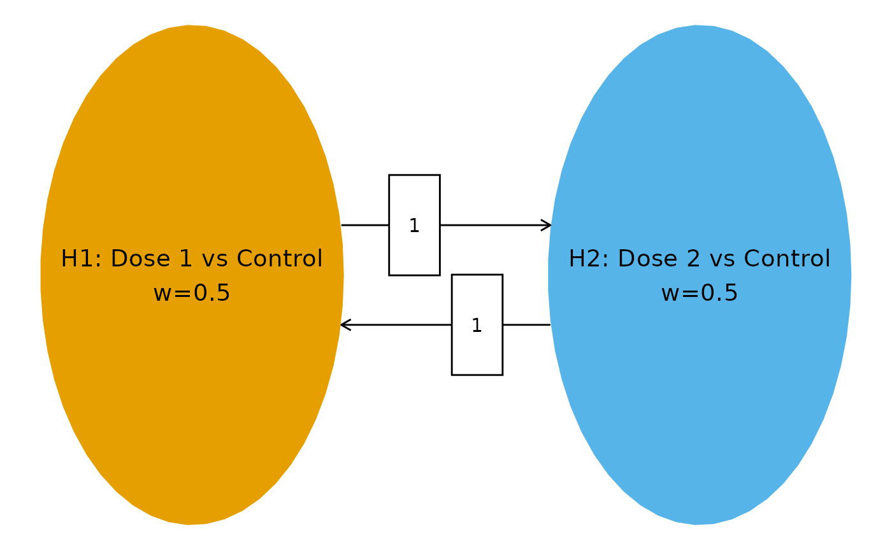

Dunnett-type dose-finding with group sequential design
Keaven Anderson
Source:vignettes/dunnett_dose.Rmd
dunnett_dose.RmdBackground
A common clinical trial design compares multiple experimental dose groups against a shared control arm. This is known as a Dunnett-type design (Dunnett (1955)). When combined with a group sequential design allowing interim analyses, the correlation between test statistics for different dose-versus-control comparisons arises naturally from the shared control arm.
The weighted parametric group sequential design (WPGSD) approach (Anderson et al. (2022)) exploits these known correlations to produce tighter efficacy bounds compared to the Bonferroni approach. This vignette demonstrates the WPGSD methodology for a trial with 2 experimental dose groups versus a common control, using overall survival (OS) as the primary endpoint, with a group sequential design having two interim analyses and a final analysis (). Using analyses exercises the full generality of the correlation computation formula.
Trial Setup
Hypotheses
We consider 2 hypotheses, each comparing an experimental dose group to the common control:
- : Dose 1 vs. Control
- : Dose 2 vs. Control
Multiplicity Strategy
We use equal initial weights ( for each hypothesis) and full transitions (). This symmetric strategy reflects no prior preference between doses.
# Transition matrix: full transition between 2 hypotheses
m <- matrix(c(0, 1, 1, 0), nrow = 2, byrow = TRUE)
# Initial weights: equal allocation
w <- c(1 / 2, 1 / 2)
# Multiplicity graph
cbPalette <- c("#E69F00", "#56B4E9")
nameHypotheses <- c(
"H1: Dose 1 vs Control",
"H2: Dose 2 vs Control"
)
hplot <- hGraph(2,
alphaHypotheses = w,
m = m,
nameHypotheses = nameHypotheses,
trhw = .2, trhh = .1,
digits = 4, trdigits = 4, size = 5, halfWid = 1.2,
halfHgt = 0.5, offset = 0.2, trprop = 0.35,
fill = as.factor(1:2),
palette = cbPalette,
wchar = "w"
)
hplot
Event Counts
We assume approximately balanced event counts across treatment arms with three analyses: two interim analyses (IA1 at ~30% information, IA2 at ~60% information) and a final analysis (FA). For OS, events are deaths observed in each dose-versus-control comparison.
| Treatment Arm | Events at IA1 | Events at IA2 | Events at FA |
|---|---|---|---|
| Dose 1 | 20 | 40 | 65 |
| Dose 2 | 22 | 44 | 70 |
| Control | 21 | 42 | 67 |
The diagonal entries of the event table represent total events for each hypothesis (experimental arm + control), while off-diagonal entries represent events shared between two comparisons (control arm events only).
# Event counts per arm
# IA1: Dose 1=20, Dose 2=22, Control=21
# IA2: Dose 1=40, Dose 2=44, Control=42
# FA: Dose 1=65, Dose 2=70, Control=67
# Event table: diagonal = experimental + control; off-diagonal = control only
event <- tribble(
~H1, ~H2, ~Analysis, ~Event,
# IA1 diagonal (total events per hypothesis = dose + control)
1, 1, 1, 41, # Dose 1 (20) + Control (21)
2, 2, 1, 43, # Dose 2 (22) + Control (21)
# IA1 off-diagonal (shared events = control only)
1, 2, 1, 21,
# IA2 diagonal
1, 1, 2, 82, # Dose 1 (40) + Control (42)
2, 2, 2, 86, # Dose 2 (44) + Control (42)
# IA2 off-diagonal
1, 2, 2, 42,
# FA diagonal
1, 1, 3, 132, # Dose 1 (65) + Control (67)
2, 2, 3, 137, # Dose 2 (70) + Control (67)
# FA off-diagonal
1, 2, 3, 67
)
event %>%
gt() %>%
tab_header(title = "Event Count Table")| Event Count Table | |||
| H1 | H2 | Analysis | Event |
|---|---|---|---|
| 1 | 1 | 1 | 41 |
| 2 | 2 | 1 | 43 |
| 1 | 2 | 1 | 21 |
| 1 | 1 | 2 | 82 |
| 2 | 2 | 2 | 86 |
| 1 | 2 | 2 | 42 |
| 1 | 1 | 3 | 132 |
| 2 | 2 | 3 | 137 |
| 1 | 2 | 3 | 67 |
Correlation Structure
Computing Correlations
The correlation between test statistics follows the formula (Anderson et al. (2022)):
where denotes the number of events included in both and .
For the Dunnett-type design, the shared events between two different dose-versus-control comparisons at the same analysis are the control arm events. For example, at the first interim analysis:
With three analyses, the correlation matrix is (2 hypotheses 3 analyses). This exercises the general correlation formula for all four cases:
- Same hypothesis, same analysis:
- Same hypothesis, different analyses ():
- Different hypotheses, same analysis:
- Different hypotheses, different analyses ():
# Generate correlation matrix
corr <- generate_corr(event)
corr %>%
as_tibble() %>%
gt() %>%
fmt_number(columns = everything(), decimals = 3) %>%
tab_header(title = "Correlation Matrix (6 x 6)")| Correlation Matrix (6 x 6) | |||||
| H1_A1 | H2_A1 | H1_A2 | H2_A2 | H1_A3 | H2_A3 |
|---|---|---|---|---|---|
| 1.000 | 0.500 | 0.707 | 0.354 | 0.557 | 0.280 |
| 0.500 | 1.000 | 0.354 | 0.707 | 0.279 | 0.560 |
| 0.707 | 0.354 | 1.000 | 0.500 | 0.788 | 0.396 |
| 0.354 | 0.707 | 0.500 | 1.000 | 0.394 | 0.792 |
| 0.557 | 0.279 | 0.788 | 0.394 | 1.000 | 0.498 |
| 0.280 | 0.560 | 0.396 | 0.792 | 0.498 | 1.000 |
Verification of Correlation Entries
We manually verify key entries of the correlation matrix to confirm correctness for the 2-hypothesis, 3-analysis scenario.
# --- Verification of key correlation entries ---
# Case 1: Same hypothesis, same analysis -> should be 1.0
cat("Corr(Z_1,1, Z_1,1) =", corr[1, 1], " (expected: 1.0)\n")
#> Corr(Z_1,1, Z_1,1) = 1 (expected: 1.0)
# Case 2: Different hypotheses, same analysis (IA1)
# Corr(Z_1,1, Z_2,1) = n_control_IA1 / sqrt(n_H1_IA1 * n_H2_IA1) = 21 / sqrt(41 * 43)
expected_12_ia1 <- 21 / sqrt(41 * 43)
cat(
"Corr(Z_1,1, Z_2,1) =", round(corr[1, 2], 6),
" (expected:", round(expected_12_ia1, 6), ")\n"
)
#> Corr(Z_1,1, Z_2,1) = 0.500142 (expected: 0.500142 )
# Case 3: Different hypotheses, same analysis (FA)
# Corr(Z_1,3, Z_2,3) = n_control_FA / sqrt(n_H1_FA * n_H2_FA) = 67 / sqrt(132 * 137)
expected_12_fa <- 67 / sqrt(132 * 137)
cat(
"Corr(Z_1,3, Z_2,3) =", round(corr[5, 6], 6),
" (expected:", round(expected_12_fa, 6), ")\n"
)
#> Corr(Z_1,3, Z_2,3) = 0.498227 (expected: 0.498227 )
# Case 4: Same hypothesis, different analyses (IA1 vs IA2)
# Corr(Z_1,1, Z_1,2) = sqrt(n_H1_IA1 / n_H1_IA2) = sqrt(41 / 82)
expected_11_ia1_ia2 <- sqrt(41 / 82)
cat(
"Corr(Z_1,1, Z_1,2) =", round(corr[1, 3], 6),
" (expected:", round(expected_11_ia1_ia2, 6), ")\n"
)
#> Corr(Z_1,1, Z_1,2) = 0.707107 (expected: 0.707107 )
# Case 5: Same hypothesis, different analyses (IA1 vs FA)
# Corr(Z_1,1, Z_1,3) = sqrt(n_H1_IA1 / n_H1_FA) = sqrt(41 / 132)
expected_11_ia1_fa <- sqrt(41 / 132)
cat(
"Corr(Z_1,1, Z_1,3) =", round(corr[1, 5], 6),
" (expected:", round(expected_11_ia1_fa, 6), ")\n"
)
#> Corr(Z_1,1, Z_1,3) = 0.55732 (expected: 0.55732 )
# Case 6: Same hypothesis, different analyses (IA2 vs FA)
# Corr(Z_1,2, Z_1,3) = sqrt(n_H1_IA2 / n_H1_FA) = sqrt(82 / 132)
expected_11_ia2_fa <- sqrt(82 / 132)
cat(
"Corr(Z_1,2, Z_1,3) =", round(corr[3, 5], 6),
" (expected:", round(expected_11_ia2_fa, 6), ")\n"
)
#> Corr(Z_1,2, Z_1,3) = 0.78817 (expected: 0.78817 )
# Case 7: Different hypotheses, different analyses (IA1 vs IA2)
# Corr(Z_1,1, Z_2,2) = n_control_IA1 / sqrt(n_H1_IA1 * n_H2_IA2) = 21 / sqrt(41 * 86)
expected_12_ia1_ia2 <- 21 / sqrt(41 * 86)
cat(
"Corr(Z_1,1, Z_2,2) =", round(corr[1, 4], 6),
" (expected:", round(expected_12_ia1_ia2, 6), ")\n"
)
#> Corr(Z_1,1, Z_2,2) = 0.353654 (expected: 0.353654 )
# Case 8: Different hypotheses, different analyses (IA2 vs FA)
# Corr(Z_1,2, Z_2,3) = n_control_IA2 / sqrt(n_H1_IA2 * n_H2_FA) = 42 / sqrt(82 * 137)
expected_12_ia2_fa <- 42 / sqrt(82 * 137)
cat(
"Corr(Z_1,2, Z_2,3) =", round(corr[3, 6], 6),
" (expected:", round(expected_12_ia2_fa, 6), ")\n"
)
#> Corr(Z_1,2, Z_2,3) = 0.396262 (expected: 0.396262 )
# Case 9: Different hypotheses, different analyses (IA1 vs FA)
# Corr(Z_2,1, Z_1,3) = n_control_IA1 / sqrt(n_H2_IA1 * n_H1_FA) = 21 / sqrt(43 * 132)
expected_21_ia1_fa <- 21 / sqrt(43 * 132)
cat(
"Corr(Z_2,1, Z_1,3) =", round(corr[2, 5], 6),
" (expected:", round(expected_21_ia1_fa, 6), ")\n"
)
#> Corr(Z_2,1, Z_1,3) = 0.278739 (expected: 0.278739 )
# Verify matrix is positive definite
eigenvalues <- eigen(corr)$values
cat("Eigenvalues:", round(eigenvalues, 6), "\n")
#> Eigenvalues: 3.562329 1.18783 0.672484 0.263761 0.224982 0.088615
cat("All positive:", all(eigenvalues > 0), "\n")
#> All positive: TRUEThe correlation matrix for this 2-hypothesis, 3-analysis Dunnett scenario has the following structure:
- Same analysis, different hypotheses: Correlation , driven by the shared control arm. With balanced arms, this approaches when .
- Same hypothesis, adjacent analyses: Correlation (IA1 vs IA2) and (IA2 vs FA), following .
- Same hypothesis, non-adjacent analyses: Correlation (IA1 vs FA), demonstrating the general formula for analyses.
- Different hypotheses, different analyses: Correlation (IA1 vs IA2) and (IA2 vs FA), combining both sources of correlation.
Futility Bounds
We use gsDesign to compute common non-binding futility
bounds at the interim analyses. These bounds apply equally to both dose
arms. The futility bounds are based on a beta-spending approach using a
Hwang-Shih-DeCani spending function.
# Group sequential design with non-binding futility
# Average information fraction across hypotheses at each analysis
IF_avg <- c(
mean(c(41 / 132, 43 / 137)),
mean(c(82 / 132, 86 / 137)),
1
)
gs_design <- gsDesign(
k = 3,
test.type = 4, # Non-binding futility
alpha = 0.025 / 2, # Per-hypothesis alpha (Bonferroni for single hypothesis)
beta = 0.1,
timing = IF_avg[1:2],
sfu = sfLDOF, # Lan-DeMets O'Brien-Fleming for efficacy
sfl = sfHSD, # HSD for futility
sflpar = -2
)
# Futility bounds (on p-value scale)
futility_z <- gs_design$lower$bound
futility_p <- pnorm(futility_z)
cat("Information fractions:", round(IF_avg, 3), "\n")
#> Information fractions: 0.312 0.624 1
cat("Futility Z-bounds:", round(futility_z, 4), "\n")
#> Futility Z-bounds: -0.1898 1.0006 2.2574
cat("Futility p-value bounds:", round(futility_p, 4), "\n")
#> Futility p-value bounds: 0.4247 0.8415 0.988
# Display the gsDesign summary
tibble(
Analysis = c("IA1", "IA2", "FA"),
`Information Fraction` = round(IF_avg, 3),
`Futility Z-bound` = round(gs_design$lower$bound, 4),
`Futility p-value` = round(pnorm(gs_design$lower$bound), 4)
) %>%
gt() %>%
tab_header(title = "Non-binding Futility Bounds (Common Across Both Doses)")| Non-binding Futility Bounds (Common Across Both Doses) | |||
| Analysis | Information Fraction | Futility Z-bound | Futility p-value |
|---|---|---|---|
| IA1 | 0.312 | -0.1898 | 0.4247 |
| IA2 | 0.624 | 1.0006 | 0.8415 |
| FA | 1.000 | 2.2574 | 0.9880 |
The futility bound is applied as a common bar: at each interim analysis, any dose arm with a one-sided p-value exceeding the futility threshold may be dropped for futility. This is a non-binding bound, meaning it does not affect the Type I error control of the efficacy bounds.
Efficacy Bounds
Information Fractions
Each hypothesis has its own information fraction based on the ratio of events at each analysis to the final analysis.
# Information fractions for each hypothesis
IF_H1 <- c(41 / 132, 82 / 132, 1)
IF_H2 <- c(43 / 137, 86 / 137, 1)
tibble(
Hypothesis = c("H1", "H2"),
`IF at IA1` = round(c(IF_H1[1], IF_H2[1]), 3),
`IF at IA2` = round(c(IF_H1[2], IF_H2[2]), 3),
`IF at FA` = 1
) %>%
gt() %>%
tab_header(title = "Information Fractions")| Information Fractions | |||
| Hypothesis | IF at IA1 | IF at IA2 | IF at FA |
|---|---|---|---|
| H1 | 0.311 | 0.621 | 1 |
| H2 | 0.314 | 0.628 | 1 |
Bonferroni Bounds
We first compute Bonferroni bounds (Type 0) as a reference, using Lan-DeMets O’Brien-Fleming spending for each hypothesis.
# Bonferroni bounds
bound_Bonf <- generate_bounds(
type = 0, k = 3, w = w, m = m,
corr = corr, alpha = 0.025,
sf = list(sfLDOF, sfLDOF),
sfparm = list(0, 0),
t = list(IF_H1, IF_H2)
)
bound_Bonf %>%
gt() %>%
fmt_number(columns = 3:4, decimals = 6) %>%
tab_header(title = "Bonferroni Bounds (Type 0)")| Bonferroni Bounds (Type 0) | |||
| Analysis | Hypotheses | H1 | H2 |
|---|---|---|---|
| 1 | H1 | 0.000058 | NA |
| 1 | H1, H2 | 0.000007 | 0.000008 |
| 1 | H2 | NA | 0.000063 |
| 2 | H1 | 0.004437 | NA |
| 2 | H1, H2 | 0.001527 | 0.001616 |
| 2 | H2 | NA | 0.004647 |
| 3 | H1 | 0.023599 | NA |
| 3 | H1, H2 | 0.012006 | 0.011978 |
| 3 | H2 | NA | 0.023536 |
WPGSD Bounds
We compute WPGSD bounds using -spending approach 2 (Type 3, separate spending per hypothesis), which applies an inflation factor to the Bonferroni nominal boundaries.
set.seed(1234)
# WPGSD bounds with separate alpha spending (Type 3)
bound_WPGSD <- generate_bounds(
type = 3, k = 3, w = w, m = m,
corr = corr, alpha = 0.025,
sf = list(sfLDOF, sfLDOF),
sfparm = list(0, 0),
t = list(IF_H1, IF_H2)
)
bound_WPGSD %>%
gt() %>%
fmt_number(columns = 3:4, decimals = 6) %>%
tab_header(title = "WPGSD Bounds (Type 3, Separate Spending)")| WPGSD Bounds (Type 3, Separate Spending) | ||||
| Analysis | Hypotheses | H1 | H2 | xi |
|---|---|---|---|---|
| 1 | H1 | 0.000058 | NA | 1.000000 |
| 1 | H1, H2 | 0.000007 | 0.000008 | 1.004683 |
| 1 | H2 | NA | 0.000063 | 1.000000 |
| 2 | H1 | 0.004437 | NA | 1.000000 |
| 2 | H1, H2 | 0.001578 | 0.001670 | 1.033524 |
| 2 | H2 | NA | 0.004647 | 1.000000 |
| 3 | H1 | 0.023599 | NA | 1.000000 |
| 3 | H1, H2 | 0.012984 | 0.012954 | 1.081468 |
| 3 | H2 | NA | 0.023536 | 1.000000 |
Comparison: Bonferroni vs. WPGSD
| Bonferroni vs. WPGSD Bounds | ||||||
| Analysis | Hypotheses | H1.B | H2.B | H1.W | H2.W | xi |
|---|---|---|---|---|---|---|
| 1.000000 | H1 | 0.000058 | NA | 0.000058 | NA | 1.000000 |
| 1.000000 | H1, H2 | 0.000007 | 0.000008 | 0.000007 | 0.000008 | 1.004683 |
| 1.000000 | H2 | NA | 0.000063 | NA | 0.000063 | 1.000000 |
| 2.000000 | H1 | 0.004437 | NA | 0.004437 | NA | 1.000000 |
| 2.000000 | H1, H2 | 0.001527 | 0.001616 | 0.001578 | 0.001670 | 1.033524 |
| 2.000000 | H2 | NA | 0.004647 | NA | 0.004647 | 1.000000 |
| 3.000000 | H1 | 0.023599 | NA | 0.023599 | NA | 1.000000 |
| 3.000000 | H1, H2 | 0.012006 | 0.011978 | 0.012984 | 0.012954 | 1.081468 |
| 3.000000 | H2 | NA | 0.023536 | NA | 0.023536 | 1.000000 |
The WPGSD bounds are less conservative than the Bonferroni bounds because they account for the positive correlation induced by the shared control arm. With 2 dose groups sharing a common control, the correlations within the same analysis are substantial (~0.50), and the WPGSD approach provides a meaningful improvement.
Combined Efficacy and Futility Summary
# Extract elementary hypothesis bounds at each analysis for both methods
elementary_hyps <- c("H1", "H2")
# Get WPGSD bounds for elementary hypotheses
wpgsd_elem <- bound_WPGSD %>%
filter(Hypotheses %in% elementary_hyps)
bonf_elem <- bound_Bonf %>%
filter(Hypotheses %in% elementary_hyps)
# Summary table
summary_tbl <- tibble(
Hypothesis = rep(elementary_hyps, each = 3),
Analysis = rep(c("IA1", "IA2", "FA"), 2),
`Bonferroni p-bound` = NA_real_,
`WPGSD p-bound` = NA_real_,
`Futility p-bound` = NA_real_
)
for (i in seq_along(elementary_hyps)) {
h <- elementary_hyps[i]
bonf_row <- bonf_elem %>% filter(Hypotheses == h)
wpgsd_row <- wpgsd_elem %>% filter(Hypotheses == h)
for (k in 1:3) {
row_idx <- (i - 1) * 3 + k
summary_tbl$`Bonferroni p-bound`[row_idx] <- as.numeric(bonf_row[bonf_row$Analysis == k, h])
summary_tbl$`WPGSD p-bound`[row_idx] <- as.numeric(wpgsd_row[wpgsd_row$Analysis == k, h])
if (k <= 2) {
summary_tbl$`Futility p-bound`[row_idx] <- futility_p[k]
} else {
summary_tbl$`Futility p-bound`[row_idx] <- NA
}
}
}
summary_tbl %>%
gt() %>%
fmt_number(columns = 3:5, decimals = 6) %>%
sub_missing(missing_text = "-") %>%
tab_header(
title = "Combined Efficacy and Futility Bounds",
subtitle = "Futility applied as common non-binding bars at interim analyses"
)| Combined Efficacy and Futility Bounds | ||||
| Futility applied as common non-binding bars at interim analyses | ||||
| Hypothesis | Analysis | Bonferroni p-bound | WPGSD p-bound | Futility p-bound |
|---|---|---|---|---|
| H1 | IA1 | 0.000058 | 0.000058 | 0.424726 |
| H1 | IA2 | 0.004437 | 0.004437 | 0.841493 |
| H1 | FA | 0.023599 | 0.023599 | - |
| H2 | IA1 | 0.000063 | 0.000063 | 0.424726 |
| H2 | IA2 | 0.004647 | 0.004647 | 0.841493 |
| H2 | FA | 0.023536 | 0.023536 | - |
Closed Testing
We demonstrate the closed testing procedure with hypothetical observed p-values. Suppose at IA1 we see a strong signal for Dose 2 but not Dose 1. At IA2 both doses show improvement. At the final analysis, Dose 2 confirms strong efficacy.
# Observed p-values (hypothetical)
p_obs <- tribble(
~Analysis, ~H1, ~H2,
1, 0.20, 0.004,
2, 0.05, 0.002,
3, 0.02, 0.001
)
p_obs %>%
gt() %>%
fmt_number(columns = 2:3, decimals = 6, drop_trailing_zeros = TRUE) %>%
tab_header(title = "Observed Nominal p-Values")| Observed Nominal p-Values | ||
| Analysis | H1 | H2 |
|---|---|---|
| 1 | 0.2 | 0.004 |
| 2 | 0.05 | 0.002 |
| 3 | 0.02 | 0.001 |
# Apply closed testing procedure
test_result <- closed_test(bound_WPGSD, p_obs)
test_result %>%
gt() %>%
tab_header(title = "Closed Testing Results (WPGSD)")| Closed Testing Results (WPGSD) | ||
| H1 | H2 | Analysis |
|---|---|---|
| Fail | Fail | Analysis 1 |
| Fail | Fail | Analysis 2 |
| Success | Success | Analysis 3 |
# Compare with Bonferroni closed testing
test_result_bonf <- closed_test(bound_Bonf, p_obs)
test_result_bonf %>%
gt() %>%
tab_header(title = "Closed Testing Results (Bonferroni)")| Closed Testing Results (Bonferroni) | ||
| H1 | H2 | Analysis |
|---|---|---|
| Fail | Fail | Analysis 1 |
| Fail | Fail | Analysis 2 |
| Success | Success | Analysis 3 |
Futility Assessment
At each interim analysis, we also check each dose against the common futility bar:
# Futility assessment at IA1 and IA2
futility_check <- tibble(
Hypothesis = rep(c("H1", "H2"), 2),
Analysis = rep(c("IA1", "IA2"), each = 2),
`Observed p` = c(0.20, 0.004, 0.05, 0.002),
`Futility bound` = rep(futility_p[1:2], each = 2),
`Drop for futility?` = ifelse(
c(0.20, 0.004, 0.05, 0.002) > rep(futility_p[1:2], each = 2),
"Yes", "No"
)
)
futility_check %>%
gt() %>%
fmt_number(columns = 3:4, decimals = 4) %>%
tab_header(
title = "Futility Assessment at Interim Analyses",
subtitle = "Common non-binding futility threshold at each interim"
)| Futility Assessment at Interim Analyses | ||||
| Common non-binding futility threshold at each interim | ||||
| Hypothesis | Analysis | Observed p | Futility bound | Drop for futility? |
|---|---|---|---|---|
| H1 | IA1 | 0.2000 | 0.4247 | No |
| H2 | IA1 | 0.0040 | 0.4247 | No |
| H1 | IA2 | 0.0500 | 0.8415 | No |
| H2 | IA2 | 0.0020 | 0.8415 | No |
Discussion
This vignette demonstrates the WPGSD approach for a Dunnett-type dose-finding trial with 2 experimental arms versus a common control and 3 analyses (2 interims + final). Key observations:
Correlation structure: The shared control arm induces positive correlations of approximately 0.50 between test statistics for different dose-versus-control comparisons at the same analysis. This correlation is substantial and directly exploitable by the WPGSD approach.
Three analyses: Using analyses demonstrates the full generality of the correlation formula. The within-hypothesis correlations across non-adjacent analyses (e.g., IA1 vs. FA) are correctly computed as , and the cross-hypothesis, cross-analysis correlations use the shared events at the earlier analysis.
Bound improvement: The WPGSD bounds are less conservative than Bonferroni bounds, providing increased nominal significance levels at all three analyses. This gain comes at no cost to FWER control.
Futility: Common non-binding futility bounds are computed externally via
gsDesignwith and applied as screening criteria at each interim analysis. Since the futility bounds are non-binding, they do not affect the WPGSD efficacy bounds or FWER control.Closed testing: The closed testing procedure is necessary for FWER control. With 2 hypotheses, there are intersection hypotheses to evaluate, making the procedure straightforward.